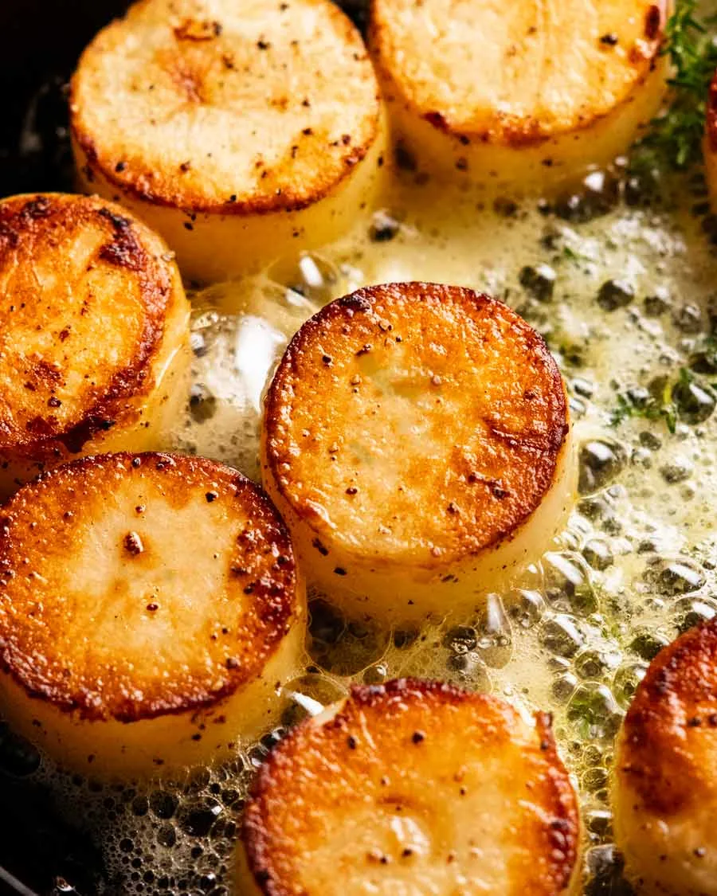

Fondant Potatoes

Description
Today’s recipe is a sublime example of turning the humble potato into a very fine-dining worthy potato side dish. Putting the shaping part aside (which is entirely optional, we’ll get to that), it’s incredibly straight forward. Just brown neat cylinders/thick wonky slabs of potato on the stove, add stock, thyme and butter then bake so it absorbs the flavour.
The result? Crispy edges, golden surfaces, creamy and flavoured all the way through inside, with intense herb infused-buttery sauce that’s thickened from the natural starches in the potato. This might be my favourite potato recipe of all time!
Ingredients
- 4 x 400g large floury potatoes
- 0.75 tsp
- 0.5 tsp black pepper
- 2 tbsp extra virgin olive oil
- 3 tbsp / 50g unsalted butter
- 6 thyme sprigs
- 250 mL chicken stock / broth
Steps
- Preheat oven to 200°C / 390°F (180°C fan-forced)
- Carve / cut each potato into cylinders ~ 6cm/ 2" diameter, 7 cm height. Then cut in half so you have 8 short cylinders 3.5 cm / 1.4" tall. See cutting method options below.
- Season – Pat potato dry. Place in a large bowl and toss with half the oil plus all the salt and pepper.
- Sear – In an ovenproof heavy based skillet (Note 2), heat the remaining 1 tbsp oil over medium high heat. Put the potato in and cook each side for 6 – 8 minutes or until golden.
- Cook – Add butter and thyme. Once melted, spoon the butter over the potato ("basting"). Add stock, bring to a boil then transfer to the oven and bake for 30 minutes until the potatoes are tender, basting at the 15 minute mark. The stock will be absorbed by the potato, leaving just butter.
- Serve – Baste one more time then serve! For a restaurant-y option, serve alongside steak with béarnaise sauce and buttered peas.
Return to Home